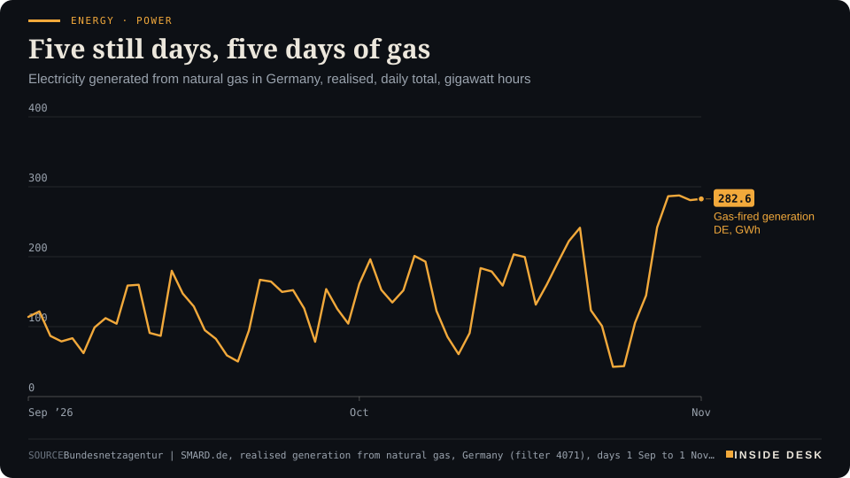
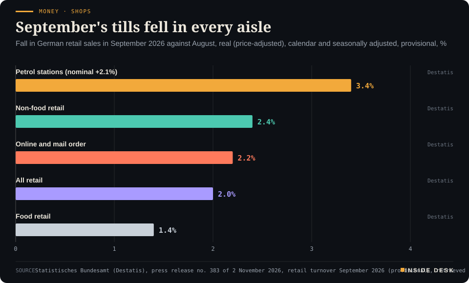

Inside Desk ePaper, Evening ePaper · Mon 2 Nov 2026
Monday, 2 November 2026Always free
Inside Desk
Evening ePaperPublished 17:30 CET · Berlin
Lead · Energy & Industry
Monday's relief came from a diplomat's words. Germany's electricity price is set by something slower: how many gas turbines are running when the wind stays away.
Brent fell 6.4% and European gas about 6.5% on Monday after soft words between Washington and Tehran, while German gas plants had run near flat out through a windless weekend. Elsewhere: a factory survey that cheered and a retail print that did not, a slow count that is not a suspicious one, and a storm named Agneta in the south.
Energy · PowerFive still days, five days of gasElectricity generated from natural gas in Germany, realised, daily total, gigawatt hours

Line chart of daily electricity generation from natural gas in Germany from 1 September to 1 November 2026, in gigawatt hours. Before late October it moves mostly between about 50 and 240, falls to 42.5 on Saturday 24 October and 43.5 on Sunday 25 October during the storm, then climbs to 242.0 on 28 October and stays near 280 to 290 for four days: 286.5 on 29 October, 287.6 on 30 October, the highest of the period, 280.9 on 31 October and 282.6 on 1 November. The latest value is 282.6 gigawatt hours for Sunday 1 November.
Source: Bundesnetzagentur | SMARD.de, realised generation from natural gas, Germany (filter 4071), days 1 Sep to 1 Nov 2026, retrieved 2 Nov 2026 · CC BY 4.0 · CSV
Geo-economics · p. 5
Markets & Macro · p. 6
Climate & Weather · p. 15
The day in one sentenceOil fell on a diplomat's words today, but your electricity bill still depends more on whether the wind comes back.
ContentsInside Desk · Evening ePaper2 November 2026
Brent fell 6.4% and European gas about 6.5% on Monday after soft words between Washington and Tehran, while German gas plants had run near flat out through a windless weekend. Elsewhere: a factory survey that cheered and a retail print that did not, a slow count that is not a suspicious one, and a storm named Agneta in the south.
11 edition pieces · 11 desks · Published 17:30 CET, 2 November 2026
23 ePaper extras, added , 2 November. They appear only in the ePaper and carry their own time.
17:30 Evening ePaper, updated live until 22:30 with an “Updated” time and a Latest page
Sun 10:00 The Sunday Magazine
Berlin time. Every issue is free.
How to read it
Swipe, use the arrow keys or the page strip. Tap any headline for the reading view. Press / to search, t for contents, +/− to zoom. Download the PDF.
LatestInside Desk · Evening ePaper2 November 2026
Latest
Live: this page and the issue are updated until 22:30 Berlin time.
Energy: Tuesday's day-ahead power price is in, about 2.5% below Monday's
LeadInside Desk · Evening ePaper2 November 2026
Energy & Industry · Lead · 3 min
Monday's relief came from a diplomat's words. Germany's electricity price is set by something slower: how many gas turbines are running when the wind stays away.
Monday was a good day for anyone who measures energy by the headline. Brent crude, the international benchmark, fell 6.4% to $106.20 a barrel by mid-afternoon in Europe, and US crude fell 6.5% to $97.351. The cause was a sentence, not a shipment. US Secretary of State Marco Rubio said President Trump “hasn’t made a decision” on attacking Iran and “would prefer to do it peacefully”1. Iran’s foreign minister said an agreement was possible if Washington “demonstrates goodwill”1.
European gas followed. The Dutch TTF price stood at €101.82 per megawatt hour at 08:45 CET, €100.10 at 11:30 and €95.20 at 15:402. Desk arithmetic: that is about 6.5% off in seven hours.
So far, the speech. Now the meter.
The plants that set the price. In Germany the price of electricity is usually set by the dearest plant needed in a given hour, and on calm days that plant tends to burn gas. Verivox puts it plainly: only about 17% of German electricity comes from gas-fired plants, but through the merit order they often set the exchange price4. That is why a cheaper gas price is good news for power only in proportion to how much gas is being burnt. And over the past five days, a great deal was.
Energy · PowerFive still days, five days of gasElectricity generated from natural gas in Germany, realised, daily total, gigawatt hours
Line chart of daily electricity generation from natural gas in Germany from 1 September to 1 November 2026, in gigawatt hours. Before late October it moves mostly between about 50 and 240, falls to 42.5 on Saturday 24 October and 43.5 on Sunday 25 October during the storm, then climbs to 242.0 on 28 October and stays near 280 to 290 for four days: 286.5 on 29 October, 287.6 on 30 October, the highest of the period, 280.9 on 31 October and 282.6 on 1 November. The latest value is 282.6 gigawatt hours for Sunday 1 November.
Source: Bundesnetzagentur | SMARD.de, realised generation from natural gas, Germany (filter 4071), days 1 Sep to 1 Nov 2026, retrieved 2 Nov 2026 · CC BY 4.0 · CSV
SMARD’s realised figures show German gas plants generated 105.4 gigawatt hours on Monday 26 October, then 242.0 on Wednesday, 286.5 on Thursday, 287.6 on Friday, 280.9 on Saturday and 282.6 on Sunday3. Desk arithmetic: Sunday’s gas output was about 2.7 times last Monday’s. On a Sunday when grid load was 1,113.1 gigawatt hours, gas covered roughly a quarter of it3.
Why they ran. The wind went missing. Onshore turbines generated 688.8 GWh on 26 October and 79.0 GWh on 1 November; offshore wind managed 3.5 GWh on Saturday3. The gap had to be filled by something you can switch on, and the turbines that burn gas were the ones that answered.
What it cost. The day-ahead auction priced Monday’s power at €259.31 per megawatt hour, after €251.42 on Saturday and €255.91 on Sunday3. Each was fixed in an auction held the day before delivery. …
Geo-economicsInside Desk · Evening ePaper2 November 2026
Geo-economics · 2 min
Washington has found that imported robots and industrial machinery threaten national security. The remedy it chose, for now, is a negotiating table and a report date.
The Federal Register published a proclamation on Monday that a lot of factory managers will read twice. Under Section 232 of the Trade Expansion Act of 1962, the US Commerce Secretary has found that robotics, industrial machinery and their parts are “being imported into the United States in such quantities and under such circumstances as to threaten to impair the national security”, and the President concurred1. It was signed on 28 October and appeared in print today1.
The finding is broad. The text says robots and industrial machines are used across all 16 US critical infrastructure sectors, that the country “relies on foreign imports for most types” of them, and that machines from “certain foreign entities” carry cybersecurity risks because they process and store sensitive data1. It puts the stakes at about $7.1 trillion in shipments of manufactured goods in 2024 and about $86 billion of equipment produced in 20241. Desk arithmetic: the equipment itself is about 1.2% of what it helps make. That is the point of the sector. Small in value, everywhere in use.
Now the part that matters for your order book. The remedy is not a tariff. The Commerce Secretary and the US Trade Representative are told to “pursue or continue pursuing negotiations of agreements” with trading partners, and to report on progress within 180 days1. Only “depending on the status or outcome” of those talks may the President consider tariffs, duties, quotas, fees, or a programme to encourage new US production1. The law lets him act if no agreement is reached within 180 days, or if one is reached and not carried out1.
So the European machine-tool maker, the Japanese robot arm and the German gearbox supplier have a date rather than a duty. That is more useful than it sounds. A negotiation produces paperwork: lists, quotas, investment pledges, all of which can be costed and planned around. A speech cannot.
The sensible reading for a buyer in Stuttgart or Ohio is dull: no rate, no list, no start date has been published1. Keep the invoices as they are, and keep a copy of the 180-day clock on the wall.
Geo-economics · Short item · ePaper extra, added
Leaders talk about a grain corridor. The shipping line has already written the risk into its price list.
Two statements about the Black Sea arrived at the weekend, and they did not say the same thing. Volodymyr Zelensky said on 31 October that he and Türkiye’s Recep Tayyip Erdogan had agreed “to work on the Black Sea grain corridor”1. Ankara, for its part, says neither Russia nor Ukraine has acted on its proposal to stop attacks on ships1.
The third statement was an invoice. From 1 November, the shipping line MSC has charged a Black Sea surcharge of $200 per container on its Black Sea–North Europe business1. Nobody gave a speech about it. It simply turned up on the rate sheet.
That is how risk usually reaches you. …
Geo-economics · Brief · ePaper extra, added
COSCO Shipping Ports’ terminal in Abu Dhabi, inside the Gulf, handled 97,734 TEU in the third quarter, down 76.4%, Container News reports1. Its terminal in Jeddah, on the Red Sea side of Saudi Arabia, rose 19.8% to 899,226 TEU, and its Suez Canal terminal rose 8.4%1.
The report gives no reasons, and one operator is not the whole Gulf. But read next to this year’s doubts about Hormuz, it is a geography lesson told in containers. When you read about a chokepoint, ask the port operator as well as the press office. Throughput is reported every quarter, and it shows where the boxes actually went.
Markets & MacroInside Desk · Evening ePaper2 November 2026
Markets & Macro · 2 min
October's US factory survey beat expectations and the input-price gauge eased by 2.7 points. Shares rose with it, but two-thirds of the purchasing managers' comments were negative.
The Institute for Supply Management’s manufacturing index for October came in at 55.5, up from 54.51. Economists polled by Reuters had expected no change2. It was the tenth month of expansion in a row. Production rose to 59.0, its highest reading since November 2021, and new orders edged up to 55.5 from 55.31.
The figure worth watching is prices paid. It eased to 75.2 from 77.9; economists had expected only 77.5, Reuters reported1,2. That is still high: factories are paying more for their inputs, just a little less quickly than in September. Supplier deliveries slowed a touch further, to 59.1, and factory employment slipped to 52.4 from 52.71.
Wall Street took the news well. By 16:21 CET the Dow was up 1%, the S&P 500 0.6% and the Nasdaq 0.8%, Yahoo Finance reported, as chipmakers clawed back part of Friday’s sell-off3. Before the release, futures had already pointed higher, at +0.5% for the S&P and +0.8% for the Nasdaq4. Cheaper oil helped too; our Energy lead covers that story.
The survey has a catch. ISM says purchasing managers’ general mood worsened for a third month running. Only 34% of their comments were positive and 66% negative1. Among the negative ones, 62% mentioned price swings, 41% longer lead times, 25% tariffs and 21% the Iran war1. The numbers show orders arriving; the comments show the people filling them uneasy.
None of this moves the Federal Reserve much. It held its rate at 3.75–4.00% last Wednesday, and economists polled by Reuters still expect a rise in December2. A prices index at 75.2 is a slower climb, not a descent. Nothing here is investment advice.
Markets & Macro · Short item · ePaper extra, added
A train maker cut its forecast for the second time in seven months, and the reason runs on German regional tracks.
Alstom’s shares lost 27.1% in Paris on Monday morning after the French train maker cut its forecast again, n-tv reported1. The company now expects an operating margin of only about 1%, 5.5 percentage points below its previous guidance. It also expects €1.5 billion in cash to flow out; until now it had expected cash to come in1.
The reason is not a recession or a rate. It is a train. Alstom blamed problems with its Coradia Max regional trains in Germany1. It had already cut its forecast seven months ago, citing delays and problems on several large orders1. Preliminary first-half figures show a loss, with a margin of minus 4% against 6.4% a year earlier1. Martin Sion, chief executive since April, announced savings and debt reduction, and said the aim is calmer waters from next year1.
What should you take from it? Big order books are not profit. A contract to build trains is a promise to deliver them on time and to specification. Penalties, rework and late payment all arrive when that fails. Desk arithmetic: a 27.1% fall in one morning is the market repricing those promises at once. Watch for the slow work after it: the delivery schedules, the settlements with operators, and whether the cash outflow turns out smaller than €1.5 billion. Nothing here is investment advice.
Markets & Macro · Brief · ePaper extra, added
Customers have withdrawn $3.64 billion from Binance since the exchange resumed withdrawals after Thursday’s hack, the company said, n-tv reported1. Binance puts that at 2.1% of assets under management, which it gave as $171 billion at the end of October1. It disputed the analytics site DefiLlama’s figure of $5.81 billion, saying that count included internal transfers to new wallets of its own1. Binance said it has replaced 95% of the stolen customer funds from its own reserves1.
Bitcoin recovered to above $78,000 after a six-week low on Friday, but $643 million flowed out of US spot bitcoin ETFs that day1. The lesson is an old one: a reserve is only as good as the count of it. Nothing here is investment advice.
Politics & InstitutionsInside Desk · Evening ePaper2 November 2026
Politics & Institutions · 2 min
The US votes on Tuesday. Some races will be called before you wake; others will take a week or two. The delay is the law working, not failing.
Tomorrow, Tuesday 3 November, Americans vote for all 435 members of the House and for the Senate seats on the ballot; Republicans defend a 218-214 House majority2. The polls close tomorrow evening US time, which is the small hours of Wednesday in Berlin. Here is what to expect from the count, so that you are not surprised by the most ordinary thing in a democracy: waiting.
“States are neither fast or slow, they all count and certify the results in accordance with the laws passed by their state legislature,” the election technology expert Ryan Macias told PolitiFact1. What is fast or slow is how soon the media has enough evidence to project a winner, and that depends mostly on the margin1. No state is required to finish its official count on election night; certification deadlines are often weeks away1.
The detail is in the rules. California accepts ballots postmarked by Election Day and received up to a week later, and counties must report most results by the 13th day after the election1. Alaska accepts ballots mailed from abroad for 15 days1. Maine and Alaska both use ranked-choice voting, so a close race there can run into extra rounds1. “There are always a handful of really close Senate and House races in which the winner will not be determined for several days or, in the cases of Alaska and California, as much as a week or two,” said Joe Lenski of SSRS, which runs a national exit poll1.
Watch Michigan as a model of the dull machinery. Detroit, with more than half a million voters and 38 drop boxes, expects to report about 95% of ballots on election night1. “It is an estimate, not a statutory deadline or guarantee,” said Daniel Baxter, the city’s elections chief of operations1. A truck collects ballots from the boxes after polls close; that takes hours, and it is not a “ballot dump”1. In 2020, a lead in Wisconsin flipped after Milwaukee finished its mail ballots around 3:30 a.m. local time, which was expected1.
One thing already settled: a federal judge dismissed a Trump administration lawsuit that sought to block certification in Alaska’s Senate race if the incumbent lost2. So the instruction for Wednesday morning is simple. Read the count, not the claims about it. A late-night change in the lead is arithmetic arriving, not fraud.
Politics & Institutions · Short item · ePaper extra, added
A primary loser backed the other party's candidate on Sunday. By Monday the answer had arrived in small cheques.
The weekend’s biggest surprise in the US midterms came from Michigan. On Sunday, Representative Haley Stevens, who lost the Democratic Senate primary to Abdul El-Sayed, endorsed his Republican opponent, Mike Rogers1. Senate Minority Leader Chuck Schumer called it a “despicable betrayal”, and Nancy Pelosi said El-Sayed “must win”1.
Then came the ledger. El-Sayed’s campaign says it raised $2.4 million on 1 November, from more than 65,000 people, nearly 30,000 of them first-time contributors, with an average gift of $36.741. Desk arithmetic: 65,000 donors at $36.74 is about $2.39 million, so the figures hang together.
Further down Tuesday’s ballot than Congress, nine US states elect members of the boards that regulate utilities, the bodies that approve electricity rates and the grid that data centres depend on1. In Arizona, Republicans hold all five seats on the Corporation Commission and two Democrats are running1. In Georgia, a Democratic sweep of the two seats on offer would give them 3-2 control of the five-member Public Service Commission1.
Few voters can name a utility commissioner. Most of them pay the commissioner’s decisions every month. If you want to know what an election changes at home, start with the board that signs off the tariff.
Psychology & BehaviourInside Desk · Evening ePaper2 November 2026
Psychology & Behaviour · 2 min
South Korea's national mental-health survey found slightly fewer people struggling and more of them seeking help. The gap between the two numbers is the useful one.
South Korea’s National Center for Mental Health, which sits under the health ministry, published its biennial survey on Sunday. Of 5,100 people aged 15 to 69, 70.1% said they had had a mental-health problem in the past year1. That is slightly fewer than the 73.6% of 20241. The most common problem was severe stress, at 47.7%, followed by unexplained physical discomfort (37.5%), several days of depression (30.8%), insomnia (30.6%) and anxiety (30.3%)2.
Two lines in the report point the other way. The share who said they had five or more problems has risen to 30.8%, Health Chosun reported, from 18.2% in 20182. And the share who said the problems seriously disrupted their daily lives rose to 21.5% from 15.6% two years ago1. Fewer people are affected, but those who are seem to be carrying more.
Then there is the number that matters most for policy. Only 30.4% said they had talked to someone or gone to a clinic or hospital1. That is the highest share since the survey began in 20161,2. It still means seven in ten kept it to themselves. The report called for easier access to services and less stigma1.
You do not need to live in Seoul for this to apply. The headline number, how many struggle, is the one that gets reported. The useful number is the one an institution can move: how many found a door that was open when they knocked. A survey with a ±1.37-point margin of error, run the same way every two years, is a dull instrument2. That is why you can trust its direction.
Psychology & Behaviour · Short item · ePaper extra, added
A company-sponsored survey is small and has an interest. Its caregiver numbers are still worth reading.
Treatment-resistant depression is defined as an inadequate response to two or more courses of antidepressants at the right dose for long enough1. On Monday the US patient group Depression and Bipolar Support Alliance and the biotech company Compass Pathways, which is developing a psilocybin treatment for the condition, published a survey of 261 patients and 73 caregivers1. Read it with both facts in mind: it is small, and its sponsor has a product in trials.
The patient findings are stark. 95% described themselves as functioning but struggling, surviving day to day or barely getting by; over 70% said they felt hopeless about the future; nearly nine in ten said they had felt judged or misunderstood because they had not got better1. More than half had cut their working hours, and more than a third had resigned from a job1.
The caregiver line is the one that rarely gets counted. About 70% of caregivers said the condition affects the whole family’s health1. Roughly half reported emotional exhaustion within three years of their relative’s diagnosis; after three years or more, nearly all (95%) did1.
If you are the one helping, that last number is not a verdict on you. It is a measure of time. Support for carers, from respite to a doctor who asks how you are, works best when it starts before year three.
Alongside its attitudes survey, South Korea’s National Center for Mental Health released its status report for 2025. It counted 6,367 people per 100,000 treated for a mental illness last year, up every year from 5,520 in 2022, 5,824 in 2023 and 6,113 in 2024, Health Chosun reported1.
The money was spread less evenly. The national average community mental-health budget was 9,722 won per person; Jeonbuk spent 17,309 won and Gyeongnam 7,3791. Desk arithmetic: Jeonbuk spends about 2.3 times as much per head as Gyeongnam. More people in treatment is good news if the clinic down the road can take them. Whether it can depends on which province you live in.
Energy & IndustryInside Desk · Evening ePaper2 November 2026
Energy & Industry · Short item · ePaper extra, added
Germany's gas stores missed their 1 November target. The regulator says the winter is still covered, and explains why the target matters less than it did.
The law set a number for 1 November: German gas storage sites were to be 70% full on average. On the day, they were at about 61.2%, according to the latest data from the European AGSI platform reported by tagesschau1.
The authorities’ answer was calm and specific. A spokeswoman for the economy ministry said supply is secure this winter even at current levels, because what matters is not only how full the stores are but also how much is withdrawn, ongoing imports and other precautions1. Bundesnetzagentur president Klaus Müller said: “It is no longer essential for a secure gas supply that the storage targets are reached”1. The regulator also noted that Germany now has LNG terminals to import through1.
Not everyone agreed. The Green energy politician Michael Kellner accused economy minister Katherina Reiche of poor preparation, saying storage levels are “lower than ever” and there is no safety buffer1.
The trade side pointed to the ledger. Tim Kehler of the gas and water industry association said missing the target brings no sanctions, and that traders have stored the gas ordered for their customers’ winter and are still doing so1. He put the gas in storage at around 150 terawatt hours, “noticeably more” than was drawn from storage last winter1. The regulator could in law withdraw booked storage capacity if needed. It says that is “currently not the case”1.
A target is a safety net, not a promise. The figure to watch through the winter is how fast the 150 terawatt hours come out.
Energy & Industry · Short item · ePaper extra, added
The first auction after Monday's relief is in. It moved, a little, because the meter had not.
This evening’s Energy lead left one number open: the first day-ahead auction after Monday’s fall in gas. SMARD now shows it. Power for Tuesday in Germany and Luxembourg averages €252.85 per megawatt hour, after €259.31 for Monday1. Desk arithmetic: that is about 2.5% cheaper, against a Dutch gas price that fell about 6.5% between 08:45 and 15:402.
The gap is the story from the lead, now with a receipt. Tuesday’s cheapest hour, from noon, is €222.07; the dearest, from 17:00, is €313.581. The evening peak is when the gas plants are needed most.
And they are still needed. SMARD’s provisional figures for Monday up to 18:00 show 231.4 gigawatt hours from gas, against 282.6 for the whole of Sunday1. Offshore wind has returned, with 93.0 GWh so far against 15.1 on Sunday, but onshore turbines produced only 43.1 GWh1. These figures are provisional and will be revised1.
So the auction did what auctions do. It paid a little less for fuel and the same for scarcity. The next number to watch is not a quote from Amsterdam but how much of Tuesday’s grid the wind covers. Nothing here is investment advice.
Energy & Industry · Brief · ePaper extra, added
The four German transmission system operators, 50Hertz, Amprion, TenneT and TransnetBW, have set their provisional national grid fee for 2027 at an average of 3.54 cents per kWh at the extra-high and transformer levels, up from 2.86 cents in 20261. That figure assumes a €5.525 billion federal subsidy from the climate and transformation fund, about €1 billion less than this year’s1. Without it, the fee would be 6.52 cents1.
The law for the subsidy has not yet passed. If there is no legal certainty by 7 December 2026, the operators expect the final 2027 fees to rise accordingly1. Desk arithmetic: the 2.98 cents between the two figures is the subsidy’s work. The date that decides it is in a parliamentary calendar, not on an exchange.
Money, FX & CommitteesInside Desk · Evening ePaper2 November 2026
Money, FX & Committees · Podium vs Print · 2 min
On the same Monday morning, Germany's factory survey was praised for its staying power and Germany's shops reported a fall nobody had forecast. Both are true; only one is spent by you.
Podium
“German industry is proving its resilience and continued its upward trend in October despite increasing cost pressure (desk translation of the German quotation)”
Phil Smith, economist at S&P Global Market Intelligence, on the final HCOB Germany manufacturing PMI, Monday 2 November 2026, with the final October reading, as reported by n-tv
Print−2.0%
Real, calendar and seasonally adjusted retail sales against August; nominal −1.5%. Against September 2025, real −2.3% while nominal sales rose 1.2%.
Statistisches Bundesamt (Destatis), retail turnover, press release no. 383, September 2026, provisional, published 2 November 2026
The podium. Germany’s final manufacturing purchasing managers’ index for October came in at 54.2, up from 53.9 and the same as the flash estimate, n-tv reported1. Phil Smith, the S&P Global economist who comments on the survey, said German industry was “proving its resilience” and had kept up its upward trend despite rising cost pressure (desk translation)1. He put the demand down to higher state spending on defence and infrastructure and to stronger export sales1. The PMI is a private survey; we quote it, we do not chart it.
The print. Earlier that morning, the statistics office had published the other side of the economy. Retail sales fell 2.0% in real terms in September against August, after calendar and seasonal adjustment, and 1.5% in nominal terms2. Against September 2025, real sales were down 2.3% even as nominal sales rose 1.2%2. Economists had expected growth of about 0.4%, n-tv reported1. “That is a data shock to start the week,” said Alexander Krüger, chief economist at Bank Bethmann (desk translation)1.
Money, FX & Committees · Short item · ePaper extra, added
Europe's biggest low-cost airline did the sum out loud, and the passenger is on both sides of it.
Ryanair’s profit after tax fell 6% to €1.61 billion in the July–September quarter, as analysts had expected, n-tv reported1. Fares in the peak season were on average 2% lower than a year earlier, but they are edging up again in the current quarter1.
The interesting number is the next one. …
Money, FX & Committees · Brief · ePaper extra, added
Rates on Frankfurt’s euro money market were little changed from last week, n-tv reported on Monday: overnight money traded at 2.42–2.62%, the same range as before1. The three-month Euribor was fixed at 2.676% on 30 October, up from 2.643% the day before; the twelve-month rate was 3.306%, against 3.308%1. The ECB kept its deposit rate at 2.5% on Thursday2.
Dealers welcomed the falling oil price and lower yields, and one said the latest German inflation data had shown “how strongly the numbers depend on energy prices” (desk translation)1. For your savings account or variable-rate loan, a quiet money market is good news: the price of a month’s money is not jumping about. Nothing here is investment advice.
Ordinary & Inherited LifeInside Desk · Evening ePaper2 November 2026
Ordinary & Inherited Life · 2 min
Gas suppliers are expected to raise prices from January. The law gives them a deadline to tell you, and gives you a way out on the same day.
November is the month the envelopes arrive. If your gas or electricity price is going up on 1 January, your supplier has to tell you in advance, and the law sets the dates.
The deadlines. In basic supply (Grundversorgung), a price change must be announced six weeks ahead, so by 20 November for a 1 January rise2. For other household contracts it is one month, so by 1 December2. These rules come from § 41 of the Energy Industry Act and § 5 of the basic-supply ordinance2. Desk arithmetic: from today, that is 18 days to the first deadline.
What to expect. Verivox expects price increases across the country at the turn of the year as gas suppliers pass on higher procurement costs: between 10% and 20% depending on the tariff, and up to €500 more a year for a heated detached house1. Wholesale gas, it says, is about 5 cents per kWh (net) dearer than in February 2025, a rise of around 140%1. Gas network fees add about 3% on average, or about €19 a year at 20,000 kWh1.
The first letters. A broker’s running list, compiled from supplier notices and local press, shows the range so far. Stadtwerke Wolfenbüttel raised all gas tariffs by 2.14 cents per kWh from 1 December, or 19.7% on its WF-eco Gas tariff2. Essen’s basic gas rose by 1.46 cents from 1 November, 12.8% on one tariff2. Annweiler am Trifels will charge 3.29 cents more for electricity in its TRI-Strom tariff from January, a rise of 9.5%2. The broker’s list is not complete. Only your own letter is binding2.
Your right. If your price goes up, you can cancel the contract with effect from the day of the increase, without notice and without charge, and that includes basic supply2. In practice the new supplier usually handles the cancellation, so you do not have to2.
What you can do. Find last year’s bill now and note your annual consumption in kWh. When the letter comes, you will have the one number you need to compare. Nothing here is investment advice.
Ordinary & Inherited Life · Short item · ePaper extra, added
Network fees rise by about €8 a year on average in 2027. The postcode matters more than the average.
Electricity network fees pay for the wires, the meter, the reading and the billing. You cannot switch away from them, because your local grid operator charges them whoever supplies you. Verivox puts their share of the household electricity price at about 29%2.
For 2027, Verivox’s analysis of the provisional fees, covering grid areas with 84% of households, finds an average rise of 1.9%, from €428 to €436 a year for a three-person household using 4,000 kWh1. One reason is the federal subsidy for transmission costs, which falls from €6.5 billion in 2026 to €5.525 billion in 20271.
The average hides the map. Hamburg’s fees rise most, by 9% or €52, to €613 a year, the highest in the country1. Saarland follows at €530 after a rise of €381. …
Ordinary & Inherited Life · Brief · ePaper extra, added
Germany burns less gas than it did before 2022, but the network still has to be maintained. Verivox’s energy expert Thorsten Storck explains the result: network costs are spread over fewer kilowatt hours, which tends to push fees up1.
For 2027, Verivox finds gas network fees up about 3% on average, around €19 a year for a house using 20,000 kWh1. Berlin rises most, by 8% or €38, ahead of Hamburg at 7% or €351. Rhineland-Palatinate and Brandenburg rise by 4.4%1. Saxony (−0.7%, −€5) and Thuringia (−0.5%, −€3) fall slightly1.
Storck’s point is that this is the small line on the bill: the network fee will have “little influence” compared with wholesale prices1. The pipes cost €19 more. The gas inside them is the line to check when your letter comes.
Tech & ComputeInside Desk · Evening ePaper2 November 2026
Tech & Compute · 2 min
Washington's cyber agency gave federal networks until 2 November to fix one Ivanti flaw and until 13 November for its sibling. The deadline, not the headline, is the defence.
Most security news arrives as a number with a villain attached. Today’s useful item is a date. In its catalogue of vulnerabilities known to be exploited in the wild, America’s Cybersecurity and Infrastructure Security Agency lists CVE-2026-111357, a “missing authentication for critical function” flaw in Ivanti Connect Secure, the remote-access gateway many organisations put at the edge of their networks. It was added on 30 October. The due date is today, 2 November1.
The catalogue is plain about what the flaw does. It “could allow a local authenticated attacker to escalate their privileges”, and it can be chained with two other Ivanti bugs, CVE-2026-104935 and CVE-2026-1185271. The second of those was added the same day, with a due date of 13 November1. Today’s entry is also marked for forensic triage, which means agencies are expected to look for signs of intrusion as well as install the fix1.
The required action is not a press release. Agencies must “apply mitigations in accordance with vendor instructions” under the agency’s binding directive, or “discontinue use of the product if mitigations are unavailable”1. That last clause is the most grown-up sentence in cybersecurity. It says a tool you cannot fix is a tool you stop using, whatever it cost.
Around this sits a noisy week. A technology round-up today reports a Chinese-linked campaign against firewalls and a record theft from the Binance exchange2. Those are claims from news reports and forensic firms, and they will be argued over. The catalogue is different: it is a public list with fields, dates and owners, and it does not need a villain to work.
If you run a small firm’s network, you are not bound by a US federal directive. …
Tech & Compute · Short item · ePaper extra, added
Both Korean memory makers say their high-bandwidth memory is spoken for. One counts signed contracts and talks; the other counts a narrower, priced deal. The difference is the story.
“Sold out” is the hardest-working phrase in the chip trade this autumn, and it does not always mean the same thing.
SK hynix told investors on 28 October that its DRAM and high-bandwidth memory (HBM) output is effectively sold out through 20291. Samsung said on 29 October that its 2027 HBM supply is sold out, with price talks concluded at target levels1. A Korean trade newsletter that set the two claims side by side found different levels of commitment underneath1.
Tech & Compute · Brief · ePaper extra, added
Apple’s quarterly results come out after the US close tonight, later than this edition, and we will not guess them. A smaller item already has a date. Apple’s website in China says iOS 27.3 will switch on some Apple Intelligence features there: Writing Tools, Genmoji, Clean Up, notification summaries, priority notifications, Visual Intelligence and Live Translation with AirPods1,2. Siri AI and Image Playground are not included1.
Apple’s own Chinese newsroom fixes the dates: testing opens with the latest iOS developer beta from 4 November, and the features reach users in China when iOS 27.3 is released in December2. Apple says it has partnered with Alibaba so that Qwen can be used inside Siri, Writing Tools and Visual Intelligence, and that support on other platforms will follow once the necessary approvals are granted2. Until then the features are limited to the iPhone 15 Pro and newer1. A launch that waits on a regulator is planned around the regulator, and this one is.
Health & CareInside Desk · Evening ePaper2 November 2026
Health & Care · 2 min
A review of real-world studies finds the RSV jab in pregnancy cut infant hospital admissions by three-quarters. The most useful number in it is a date, not a percentage.
Trials told us the RSV vaccine given in pregnancy works. The harder question is whether it works in ordinary clinics, with ordinary timing and ordinary paperwork. A new review of real-world studies, presented at the IDWeek 2026 meeting and reported today, gives a calm answer: yes, if you are not late1.
The review pooled seven studies from Argentina, the UK and the US, covering 3,029 vaccinated mother-and-baby pairs1. When mothers were vaccinated at least 14 days before birth, the vaccine was 75.5% effective against hospital admission for RSV in the baby’s first six months, compared with unvaccinated controls1. Protection was highest in babies aged three months or younger, at 80.8%, and 72.4% across the first six months1. It is a “living” review: the estimates are updated as new studies come out1.
Then comes the number that matters for the calendar. When the jab was given less than 14 days before birth, effectiveness fell to 28%1. That figure comes from a single study, as the lead author, Ariel Bardach of the Institute for Clinical Effectiveness and Health Policy in Buenos Aires, points out, but it fits the biology: a mother needs time to make antibodies and pass them on1. An outside expert, Natasha Halasa of Vanderbilt University Medical Center, said clinicians “should not wait until the end of the eligible window to offer it”1.
The limits are stated too. The studies are observational, they measured hospital admissions rather than intensive care, and they say little yet about premature babies or low-income countries, where the RSV burden is greatest1. The study was funded by Pfizer, which makes the vaccine, and several co-authors are Pfizer employees1. Families also have a second option, antibody injections for the baby, and should be told about both1.
If you are pregnant, or about to be a grandparent, the practical point is small and dull. Ask about the jab at the antenatal appointment, not at the last one. …
Health & Care · Short item · ePaper extra, added
England's flu jab programme is a few points slower than a year ago in most groups, while flu itself is still low. The one group ahead is pregnant women.
Vaccine programmes are not won in a week; they are won in the weekly table. England’s latest one, from the UK Health Security Agency, covers data up to 25 October1.
Flu is circulating at low levels and activity was stable across most measures1. Laboratory positivity was 6.6%, against 6.4% a week earlier, and the hospital admission rate for flu was stable at 2.47 per 100,000 people1. Covid activity fell and is also low; RSV rose but remains at baseline levels1.
The vaccine table is where the work shows. …
Health & Care · Brief · ePaper extra, added
A flu jab that works one time in three is often waved away. A US analysis presented at IDWeek 2026 shows why that is the wrong reflex1. Researchers from the CDC’s VISION network studied 76,815 emergency and urgent-care visits by children and teenagers last winter, a season dominated by a drifted H3N2 strain1. The vaccine cut the risk of a flu-related visit by 36% overall, by 47% in children aged six months to four years and by 29% in those aged five to 171. Protection was 40% in the first two months after the jab and 34% after four months1.
The authors concluded that even moderate effectiveness can substantially reduce the flu burden among children1. The findings do not necessarily represent the CDC’s official position1. For a parent, the point is simple: fewer nights in a waiting room, starting with the youngest.
Security & OrderInside Desk · Evening ePaper2 November 2026
Security & Order · 2 min
Hackers hijacked emergency-alert apps in Ukraine and then in Russia. The phones screamed; the sirens, loudspeakers and air force did not.
On Sunday night, at about 22:47 Kyiv time (21:47 CET), Ukraine’s Air Alert app began pushing red-level warnings across the country1. Kyiv users got more: a “radiation threat”, a “chemical threat” and “street fighting” in the capital1. The BBC counted 122 fake alerts between 22:47 and 22:541. One, written in Russian, told Ukrainians not to worry, “the Oreshnik is incoming”, a reference to a Russian intermediate-range missile2.
Hours later Russia’s emergencies ministry said its own app had been hit by a “massive cyber-attack” and that false alerts had gone out across 33 of Russia’s 89 regions at about 2:45 a.m. Moscow time1,2. A Russian Telegram channel said a group called Hitcore had claimed the Ukrainian breach; that could not be verified2. It is not clear whether the two attacks were linked1,2. A Ukrainian MP said he could “neither confirm nor deny” Ukrainian involvement in the Russian one1.
Now the part that went right. Ukraine’s air force posted at 23:02, about a quarter of an hour after the first fake, that the app had “likely been compromised” and “There is no radiation threat!”1. All-clear messages followed1. Air force spokesman Yurii Ihnat said the app is separate from military command systems, so defence operations were not affected2. Moscow said the same of its side: the app is “supplementary”; sirens, loudspeakers, SMS, television and radio were working normally1,2.
The quieter lesson is about redundancy. Widespread panic appears to have been avoided, the BBC’s Kyiv correspondent reported, because so many alerts arriving so fast looked like a fault1. Ukrainians, used to genuine alerts as often as 20 times a day, also noticed that one message came in Russian, which “immediately aroused suspicions”, MP Oleksandr Merezhko said1. One Lviv mother told the BBC she grew suspicious at “street fighting”: “that’s impossible”1. That is media literacy working late at night.
For you, wherever you live, the takeaway is practical. Know your country’s official warning channels beyond a single app, and treat any alert that tells you to tap a link as suspect. Ukraine’s emergency service gave exactly that advice1. …
Security & Order · Short item · ePaper extra, added
The Kherson ceasefire expired at midnight. By breakfast it was over in practice; in Kyiv, the negotiator was already calling it a pilot.
The local ceasefire around occupied Oleshky, which began on 27 October and was the most significant truce of the full-scale war, ended at midnight1. Early on Monday Ukrainian authorities in Kherson reported several Russian drone attacks; a 62-year-old woman and a 73-year-old man were taken to hospital with blast injuries1. …
Security & Order · Brief · ePaper extra, added
The Saudi-led coalition said on Monday its air defences “intercepted and destroyed a ballistic missile” aimed at southern Saudi Arabia, after downing a drone on Sunday evening1. Houthi-affiliated media reported that coalition strikes on Hodeidah wounded seven people: four at the Ras Isa port dock and three at an oil company site in Bajil1. The coalition did not comment on those reports1.
On land, the city of Taiz remains besieged; its governor says 120 health centres have stopped working since supply routes were cut in early October1. Watch the port and the clinics, not the communiqués: they show what the war costs the roughly 43 million people of Yemen1.
Climate & WeatherInside Desk · Evening ePaper2 November 2026
Climate & Weather · 2 min
A low over southern Italy, named Agneta, brought orange alerts to two Italian regions and red ones to parts of Greece. The useful work today is in the bulletins, the school closures and the drains.
Autumn in the Mediterranean does not arrive as a season; it arrives as a low. On Monday, a disturbance from the Balkans heading towards the Tyrrhenian Sea deepened over southern Italy1. Italy’s Civil Protection Department issued an orange alert for Puglia and Basilicata and a yellow alert for Abruzzo, Molise, Campania, Calabria and Sicily, for heavy thunderstorms, strong winds and possible hail1. Temperatures in some areas could fall 4–6 degrees below the seasonal average1.
The local response is the part worth reading. Schools were closed in San Severo, Lecce and Brindisi1. Lecce closed its municipal cemetery, parks and a sports ground and suspended two markets for the duration of the alert; Barletta is watching its underpasses, which can fill with water in heavy rain1. None of that makes news on its own, and all of it keeps people out of the places where floods kill.
The same system then moved east. Greece’s national meteorological service issued an emergency bulletin saying the low, which Italy’s meteorological service named Agneta, would bring heavy rain and thunderstorms, possibly with hail and frequent lightning, until Tuesday2. Corfu, Paxos and coastal Epirus were under an orange warning, rising to red from Monday evening; the eastern Aegean islands from Chios southwards and the Dodecanese were under red warnings until the night2. On Tuesday the red warnings move north-east, to Macedonia, Thrace and islands including Lemnos and Lesbos2.
The ministry’s advice is unglamorous and specific: secure loose objects, check that gutters and drainpipes are not blocked, and do not cross streams on foot or by car during storms or for several hours afterwards2. If you are travelling in southern Italy or Greece this week, the colour on the national warning map is the only forecast you need to obey. Check it before the ferry, not on it.
Climate & Weather · Short item · ePaper extra, added
A dry Western Cape has cut the country's wheat estimate to its lowest in about eight years. The cushion is a world that still has plenty of wheat, if it can move it.
Drought rarely makes a headline on the day it matters. It shows up months later, in a crop estimate. South Africa’s Crop Estimates Committee released its third winter crop estimate on 27 October and cut the wheat figure by a further 1% from September, to 1.79 million tonnes1. That is 6% lower than last year and the smallest harvest in about eight years1.
Fewer hectares are only part of it. The national average yield is about 3.67 tonnes per hectare, also the lowest in eight years, which the analysis links to drier weather in the Western Cape1. Roughly two-thirds of the country’s winter wheat is planted there, so a dry season in one province shows up nationally1. Silo data already show the harvest moving: by 23 October farmers had delivered about 150,061 tonnes since the marketing year began1.
The cushion is elsewhere. …
Climate & Weather · Brief · ePaper extra, added
Bulgaria’s national meteorological bureau issued a Code Orange warning for heavy rain on Monday for seven districts: Varna, Bourgas, Dobrich, Silistra, Shoumen, Razgrad and Turgovishte1. Ten more, including Plovdiv, Rousse and Stara Zagora, were on Code Yellow; the west of the country was green1.
The bureau spells out what orange means: possible flooding of properties and transport networks, possible disruption to power, communications and water supply, and partial evacuation if necessary1. Significant rain was expected along the central and northern Black Sea coast, with snow above 1,800–2,000 metres in the mountains1. If you drive in eastern Bulgaria this week, the bureau’s own warning is the relevant one: aquaplaning and poor visibility1.
Charts and dataInside Desk · Evening ePaper2 November 2026
Charts and data
Energy · PowerFive still days, five days of gasElectricity generated from natural gas in Germany, realised, daily total, gigawatt hours
Line chart of daily electricity generation from natural gas in Germany from 1 September to 1 November 2026, in gigawatt hours. Before late October it moves mostly between about 50 and 240, falls to 42.5 on Saturday 24 October and 43.5 on Sunday 25 October during the storm, then climbs to 242.0 on 28 October and stays near 280 to 290 for four days: 286.5 on 29 October, 287.6 on 30 October, the highest of the period, 280.9 on 31 October and 282.6 on 1 November. The latest value is 282.6 gigawatt hours for Sunday 1 November.
Source: Bundesnetzagentur | SMARD.de, realised generation from natural gas, Germany (filter 4071), days 1 Sep to 1 Nov 2026, retrieved 2 Nov 2026 · CC BY 4.0 · CSV
Latest values
Series
Value
Date
Chart
Gas-fired generation DE, GWh
282.6
1 Nov 2026
Five still days, five days of gas
Last data point of each series in the charts above, from the Inside Desk data archive. Sources under each chart.
Back pageInside Desk · Evening ePaper2 November 2026
Before you close the tab
The day in one sentence
Oil fell on a diplomat's words today, but your electricity bill still depends more on whether the wind comes back.
One thing you can do this week
If you want to follow the American results, pick one time to look on Wednesday morning, and leave the screen alone until then. Counts firm up over hours, not minutes, and a figure read once over breakfast tends to be calmer, and more complete, than the same figure refreshed at three in the morning.
A habit, not advice.
What went right
NASA's Perseverance rover has now driven farther than any vehicle on another world: on 11 October its total reached 45.22 kilometres, or 28.10 miles, and Guinness World Records has recognised the mark 1. The record could have come two months earlier, when the rover sat about 200 metres short, but the team kept it working among ancient rock outcrops first 1. Engineers got there with thousands of simulations, braking software that steers around rocks, and a way for the rover to fix its own position from orbital pictures without help from Earth 1. Patience first, record second, and the paperwork followed.
In euros at home
A litre of Super E10 cost €2.114 on Germany's October average, about 15.2 cents less than in September, and diesel €2.261, 12.5 cents less, according to ADAC's monthly review published today 2. The motoring club credits the fuel tax cut that runs from 1 October to the end of the year, and says it has largely reached drivers at the petrol pump but only partly at the diesel pump 2. Desk arithmetic: a 50-litre tank of E10 at October's average comes to about €105.70, roughly €7.60 less than at September's €2.266; the same tank of diesel cost about €6.25 less than in September.
Desk arithmetic on the cited averages. Prices differ by station, region and time of day. Nothing here is advice.
Small words
Tankrabatt
The German word for the temporary fuel tax cut. From 1 October to the end of December, the energy tax on petrol and diesel is 14 cents a litre lower, which with VAT comes to almost 17 cents 3. Whether a driver actually sees it depends on whether the stations pass it on, which is why ADAC checks the monthly averages 2.
Commentary for information only. Not investment, legal, tax, medical or political advice. Inside Desk is free and reader-supported. Every number is sourced in the piece it appears in.
This issue has been updated.
All articles in this edition
Energy & Industry · 3 min read
Oil fell 6% on a sentence, gas fell 6% by teatime, and the power plants that burn it ran all weekend
Monday's relief came from a diplomat's words. Germany's electricity price is set by something slower: how many gas turbines are running when the wind stays away.
Monday was a good day for anyone who measures energy by the headline. Brent crude, the international benchmark, fell 6.4% to $106.20 a barrel by mid-afternoon in Europe, and US crude fell 6.5% to $97.351. The cause was a sentence, not a shipment. US Secretary of State Marco Rubio said President Trump “hasn’t made a decision” on attacking Iran and “would prefer to do it peacefully”1. Iran’s foreign minister said an agreement was possible if Washington “demonstrates goodwill”1.
European gas followed. The Dutch TTF price stood at €101.82 per megawatt hour at 08:45 CET, €100.10 at 11:30 and €95.20 at 15:402. Desk arithmetic: that is about 6.5% off in seven hours.
So far, the speech. Now the meter.
The plants that set the price. In Germany the price of electricity is usually set by the dearest plant needed in a given hour, and on calm days that plant tends to burn gas. Verivox puts it plainly: only about 17% of German electricity comes from gas-fired plants, but through the merit order they often set the exchange price4. That is why a cheaper gas price is good news for power only in proportion to how much gas is being burnt. And over the past five days, a great deal was.
Energy · PowerFive still days, five days of gasElectricity generated from natural gas in Germany, realised, daily total, gigawatt hours
Line chart of daily electricity generation from natural gas in Germany from 1 September to 1 November 2026, in gigawatt hours. Before late October it moves mostly between about 50 and 240, falls to 42.5 on Saturday 24 October and 43.5 on Sunday 25 October during the storm, then climbs to 242.0 on 28 October and stays near 280 to 290 for four days: 286.5 on 29 October, 287.6 on 30 October, the highest of the period, 280.9 on 31 October and 282.6 on 1 November. The latest value is 282.6 gigawatt hours for Sunday 1 November.
Source: Bundesnetzagentur | SMARD.de, realised generation from natural gas, Germany (filter 4071), days 1 Sep to 1 Nov 2026, retrieved 2 Nov 2026 · CC BY 4.0 · CSV
SMARD’s realised figures show German gas plants generated 105.4 gigawatt hours on Monday 26 October, then 242.0 on Wednesday, 286.5 on Thursday, 287.6 on Friday, 280.9 on Saturday and 282.6 on Sunday3. Desk arithmetic: Sunday’s gas output was about 2.7 times last Monday’s. On a Sunday when grid load was 1,113.1 gigawatt hours, gas covered roughly a quarter of it3.
Why they ran. The wind went missing. Onshore turbines generated 688.8 GWh on 26 October and 79.0 GWh on 1 November; offshore wind managed 3.5 GWh on Saturday3. The gap had to be filled by something you can switch on, and the turbines that burn gas were the ones that answered.
What it cost. The day-ahead auction priced Monday’s power at €259.31 per megawatt hour, after €251.42 on Saturday and €255.91 on Sunday3. Each was fixed in an auction held the day before delivery. The first auction run after today’s fall in gas is the one for Tuesday. When we checked at 16:30 CET, SMARD had not yet published that result3. We will not guess it.
The early sign. SMARD’s provisional hourly data for Monday show offshore wind already at 76.9 GWh in the first 15 hours of the day, against 15.1 GWh for all of Sunday, while gas-fired output was 188.1 GWh over the same 15 hours3. These figures are provisional and will be revised3. They are also the only part of today’s story that will still matter after the speeches have moved on.
What the oil traders said. Nobody in the market is calling this peace. Tamas Varga of PVM Oil Associates told CNBC that attacks on ships and refineries continue, “doing little to inspire confidence”, before adding: “Nonetheless, hope springs eternal”1. That is the right tone for a household too. A 6% fall in a futures price is a quote on a screen. It reaches you, if it does at all, through a supplier’s procurement over months and the letter that follows. Verivox’s household electricity price was 34.4 cents per kWh in October, and a new contract cost about 33 cents on 30 October4.
The calm point. The machinery deserves more credit than the speech. Every number above was published in the open: auction results before delivery, generation figures within hours, exchange quotes during the day. If you want to know whether Monday’s relief is real, watch two things this week: the next day-ahead result on SMARD, and how many gigawatt hours the gas plants are still producing. If the wind comes back, the second number will fall, and the first will follow it more reliably than any sentence from Washington or Tehran. Nothing here is investment advice.
Desk comment A barrel responds to a sentence. A turbine responds to the wind. Your bill follows the turbine.
Robots on the list, and a 180-day clock instead of a tariff
Washington has found that imported robots and industrial machinery threaten national security. The remedy it chose, for now, is a negotiating table and a report date.
The Federal Register published a proclamation on Monday that a lot of factory managers will read twice. Under Section 232 of the Trade Expansion Act of 1962, the US Commerce Secretary has found that robotics, industrial machinery and their parts are “being imported into the United States in such quantities and under such circumstances as to threaten to impair the national security”, and the President concurred1. It was signed on 28 October and appeared in print today1.
The finding is broad. The text says robots and industrial machines are used across all 16 US critical infrastructure sectors, that the country “relies on foreign imports for most types” of them, and that machines from “certain foreign entities” carry cybersecurity risks because they process and store sensitive data1. It puts the stakes at about $7.1 trillion in shipments of manufactured goods in 2024 and about $86 billion of equipment produced in 20241. Desk arithmetic: the equipment itself is about 1.2% of what it helps make. That is the point of the sector. Small in value, everywhere in use.
Now the part that matters for your order book. The remedy is not a tariff. The Commerce Secretary and the US Trade Representative are told to “pursue or continue pursuing negotiations of agreements” with trading partners, and to report on progress within 180 days1. Only “depending on the status or outcome” of those talks may the President consider tariffs, duties, quotas, fees, or a programme to encourage new US production1. The law lets him act if no agreement is reached within 180 days, or if one is reached and not carried out1.
So the European machine-tool maker, the Japanese robot arm and the German gearbox supplier have a date rather than a duty. That is more useful than it sounds. A negotiation produces paperwork: lists, quotas, investment pledges, all of which can be costed and planned around. A speech cannot.
The sensible reading for a buyer in Stuttgart or Ohio is dull: no rate, no list, no start date has been published1. Keep the invoices as they are, and keep a copy of the 180-day clock on the wall.
Desk comment A finding is a word. A tariff is a number. Read the number.
Leaders talk about a grain corridor. The shipping line has already written the risk into its price list.
Two statements about the Black Sea arrived at the weekend, and they did not say the same thing. Volodymyr Zelensky said on 31 October that he and Türkiye’s Recep Tayyip Erdogan had agreed “to work on the Black Sea grain corridor”1. Ankara, for its part, says neither Russia nor Ukraine has acted on its proposal to stop attacks on ships1.
The third statement was an invoice. From 1 November, the shipping line MSC has charged a Black Sea surcharge of $200 per container on its Black Sea–North Europe business1. Nobody gave a speech about it. It simply turned up on the rate sheet.
That is how risk usually reaches you. Not as a headline but as a line item that a forwarder passes to an importer, who passes it to a wholesaler, who folds it into a shelf price months later. A corridor agreed in principle does not remove the surcharge. A corridor that works, measured in sailings that arrive unharmed, eventually will, because carriers price what they see on the water.
The useful habit is to watch both lists. One is the diplomats’ list of meetings and proposals. The other is the carriers’ list of surcharges, war-risk premiums and port calls. When the second list gets shorter, the first one has worked.
Appears only in the ePaper · Commentary for information only. Not advice.
Geo-economics · Brief · ePaper extra, added
Abu Dhabi down 76.4%, Jeddah up 19.8%
One port operator's quarterly numbers, read on either side of the Arabian Peninsula.
COSCO Shipping Ports’ terminal in Abu Dhabi, inside the Gulf, handled 97,734 TEU in the third quarter, down 76.4%, Container News reports1. Its terminal in Jeddah, on the Red Sea side of Saudi Arabia, rose 19.8% to 899,226 TEU, and its Suez Canal terminal rose 8.4%1.
The report gives no reasons, and one operator is not the whole Gulf. But read next to this year’s doubts about Hormuz, it is a geography lesson told in containers. When you read about a chokepoint, ask the port operator as well as the press office. Throughput is reported every quarter, and it shows where the boxes actually went.
Appears only in the ePaper · Commentary for information only. Not advice.
Markets & Macro · 2 min read
Factories at 55.5, prices paid off the boil, and Wall Street bought the bounce
October's US factory survey beat expectations and the input-price gauge eased by 2.7 points. Shares rose with it, but two-thirds of the purchasing managers' comments were negative.
The Institute for Supply Management’s manufacturing index for October came in at 55.5, up from 54.51. Economists polled by Reuters had expected no change2. It was the tenth month of expansion in a row. Production rose to 59.0, its highest reading since November 2021, and new orders edged up to 55.5 from 55.31.
The figure worth watching is prices paid. It eased to 75.2 from 77.9; economists had expected only 77.5, Reuters reported1,2. That is still high: factories are paying more for their inputs, just a little less quickly than in September. Supplier deliveries slowed a touch further, to 59.1, and factory employment slipped to 52.4 from 52.71.
Wall Street took the news well. By 16:21 CET the Dow was up 1%, the S&P 500 0.6% and the Nasdaq 0.8%, Yahoo Finance reported, as chipmakers clawed back part of Friday’s sell-off3. Before the release, futures had already pointed higher, at +0.5% for the S&P and +0.8% for the Nasdaq4. Cheaper oil helped too; our Energy lead covers that story.
The survey has a catch. ISM says purchasing managers’ general mood worsened for a third month running. Only 34% of their comments were positive and 66% negative1. Among the negative ones, 62% mentioned price swings, 41% longer lead times, 25% tariffs and 21% the Iran war1. The numbers show orders arriving; the comments show the people filling them uneasy.
None of this moves the Federal Reserve much. It held its rate at 3.75–4.00% last Wednesday, and economists polled by Reuters still expect a rise in December2. A prices index at 75.2 is a slower climb, not a descent. Nothing here is investment advice.
Desk comment A purchase order is slower news than a headline, and sturdier for it.
Markets & Macro · Short item · ePaper extra, added
Alstom down 27.1% on a margin of about one per cent
A train maker cut its forecast for the second time in seven months, and the reason runs on German regional tracks.
Alstom’s shares lost 27.1% in Paris on Monday morning after the French train maker cut its forecast again, n-tv reported1. The company now expects an operating margin of only about 1%, 5.5 percentage points below its previous guidance. It also expects €1.5 billion in cash to flow out; until now it had expected cash to come in1.
The reason is not a recession or a rate. It is a train. Alstom blamed problems with its Coradia Max regional trains in Germany1. It had already cut its forecast seven months ago, citing delays and problems on several large orders1. Preliminary first-half figures show a loss, with a margin of minus 4% against 6.4% a year earlier1. Martin Sion, chief executive since April, announced savings and debt reduction, and said the aim is calmer waters from next year1.
What should you take from it? Big order books are not profit. A contract to build trains is a promise to deliver them on time and to specification. Penalties, rework and late payment all arrive when that fails. Desk arithmetic: a 27.1% fall in one morning is the market repricing those promises at once. Watch for the slow work after it: the delivery schedules, the settlements with operators, and whether the cash outflow turns out smaller than €1.5 billion. Nothing here is investment advice.
Appears only in the ePaper · Commentary for information only. Not advice.
Markets & Macro · Brief · ePaper extra, added
$3.64 billion out of Binance, and a dispute over the count
After the hack, the withdrawals. The exchange and an analytics site disagree about how many.
Customers have withdrawn $3.64 billion from Binance since the exchange resumed withdrawals after Thursday’s hack, the company said, n-tv reported1. Binance puts that at 2.1% of assets under management, which it gave as $171 billion at the end of October1. It disputed the analytics site DefiLlama’s figure of $5.81 billion, saying that count included internal transfers to new wallets of its own1. Binance said it has replaced 95% of the stolen customer funds from its own reserves1.
Bitcoin recovered to above $78,000 after a six-week low on Friday, but $643 million flowed out of US spot bitcoin ETFs that day1. The lesson is an old one: a reserve is only as good as the count of it. Nothing here is investment advice.
Appears only in the ePaper · Commentary for information only. Not advice.
Politics & Institutions · 2 min read
Tomorrow night, slow is not suspicious
The US votes on Tuesday. Some races will be called before you wake; others will take a week or two. The delay is the law working, not failing.
Tomorrow, Tuesday 3 November, Americans vote for all 435 members of the House and for the Senate seats on the ballot; Republicans defend a 218-214 House majority2. The polls close tomorrow evening US time, which is the small hours of Wednesday in Berlin. Here is what to expect from the count, so that you are not surprised by the most ordinary thing in a democracy: waiting.
“States are neither fast or slow, they all count and certify the results in accordance with the laws passed by their state legislature,” the election technology expert Ryan Macias told PolitiFact1. What is fast or slow is how soon the media has enough evidence to project a winner, and that depends mostly on the margin1. No state is required to finish its official count on election night; certification deadlines are often weeks away1.
The detail is in the rules. California accepts ballots postmarked by Election Day and received up to a week later, and counties must report most results by the 13th day after the election1. Alaska accepts ballots mailed from abroad for 15 days1. Maine and Alaska both use ranked-choice voting, so a close race there can run into extra rounds1. “There are always a handful of really close Senate and House races in which the winner will not be determined for several days or, in the cases of Alaska and California, as much as a week or two,” said Joe Lenski of SSRS, which runs a national exit poll1.
Watch Michigan as a model of the dull machinery. Detroit, with more than half a million voters and 38 drop boxes, expects to report about 95% of ballots on election night1. “It is an estimate, not a statutory deadline or guarantee,” said Daniel Baxter, the city’s elections chief of operations1. A truck collects ballots from the boxes after polls close; that takes hours, and it is not a “ballot dump”1. In 2020, a lead in Wisconsin flipped after Milwaukee finished its mail ballots around 3:30 a.m. local time, which was expected1.
One thing already settled: a federal judge dismissed a Trump administration lawsuit that sought to block certification in Alaska’s Senate race if the incumbent lost2. So the instruction for Wednesday morning is simple. Read the count, not the claims about it. A late-night change in the lead is arithmetic arriving, not fraud.
Desk comment A fast count is a convenience. An accurate count is the institution.
Politics & Institutions · Short item · ePaper extra, added
Michigan: one endorsement, 65,000 donors, one day
A primary loser backed the other party's candidate on Sunday. By Monday the answer had arrived in small cheques.
The weekend’s biggest surprise in the US midterms came from Michigan. On Sunday, Representative Haley Stevens, who lost the Democratic Senate primary to Abdul El-Sayed, endorsed his Republican opponent, Mike Rogers1. Senate Minority Leader Chuck Schumer called it a “despicable betrayal”, and Nancy Pelosi said El-Sayed “must win”1.
Then came the ledger. El-Sayed’s campaign says it raised $2.4 million on 1 November, from more than 65,000 people, nearly 30,000 of them first-time contributors, with an average gift of $36.741. Desk arithmetic: 65,000 donors at $36.74 is about $2.39 million, so the figures hang together.
The last New York Times/Siena poll put El-Sayed on 53% and Rogers on 42%, but it was taken before the endorsement1. Nobody yet knows what one politician’s switch does to a statewide electorate, and this desk will not guess.
What you can see is how a democracy absorbs a shock in two days: a statement, a counter-statement, and tens of thousands of people each sending the price of a dinner. The answer comes tomorrow, in ballots counted under Michigan law, and possibly not before Wednesday morning in Berlin.
Tuesday also elects utility regulators in nine states. Dull titles, real invoices.
Further down Tuesday’s ballot than Congress, nine US states elect members of the boards that regulate utilities, the bodies that approve electricity rates and the grid that data centres depend on1. In Arizona, Republicans hold all five seats on the Corporation Commission and two Democrats are running1. In Georgia, a Democratic sweep of the two seats on offer would give them 3-2 control of the five-member Public Service Commission1.
Few voters can name a utility commissioner. Most of them pay the commissioner’s decisions every month. If you want to know what an election changes at home, start with the board that signs off the tariff.
Appears only in the ePaper · Commentary for information only. Not advice.
Psychology & Behaviour · 2 min read
Seven in ten had a problem; three in ten asked for help
South Korea's national mental-health survey found slightly fewer people struggling and more of them seeking help. The gap between the two numbers is the useful one.
South Korea’s National Center for Mental Health, which sits under the health ministry, published its biennial survey on Sunday. Of 5,100 people aged 15 to 69, 70.1% said they had had a mental-health problem in the past year1. That is slightly fewer than the 73.6% of 20241. The most common problem was severe stress, at 47.7%, followed by unexplained physical discomfort (37.5%), several days of depression (30.8%), insomnia (30.6%) and anxiety (30.3%)2.
Two lines in the report point the other way. The share who said they had five or more problems has risen to 30.8%, Health Chosun reported, from 18.2% in 20182. And the share who said the problems seriously disrupted their daily lives rose to 21.5% from 15.6% two years ago1. Fewer people are affected, but those who are seem to be carrying more.
Then there is the number that matters most for policy. Only 30.4% said they had talked to someone or gone to a clinic or hospital1. That is the highest share since the survey began in 20161,2. It still means seven in ten kept it to themselves. The report called for easier access to services and less stigma1.
You do not need to live in Seoul for this to apply. The headline number, how many struggle, is the one that gets reported. The useful number is the one an institution can move: how many found a door that was open when they knocked. A survey with a ±1.37-point margin of error, run the same way every two years, is a dull instrument2. That is why you can trust its direction.
Desk comment A survey cannot treat anyone. It can count the door nobody walked through.
Psychology & Behaviour · Short item · ePaper extra, added
Ninety-five per cent after three years: the carers of treatment-resistant depression
A company-sponsored survey is small and has an interest. Its caregiver numbers are still worth reading.
Treatment-resistant depression is defined as an inadequate response to two or more courses of antidepressants at the right dose for long enough1. On Monday the US patient group Depression and Bipolar Support Alliance and the biotech company Compass Pathways, which is developing a psilocybin treatment for the condition, published a survey of 261 patients and 73 caregivers1. Read it with both facts in mind: it is small, and its sponsor has a product in trials.
The patient findings are stark. 95% described themselves as functioning but struggling, surviving day to day or barely getting by; over 70% said they felt hopeless about the future; nearly nine in ten said they had felt judged or misunderstood because they had not got better1. More than half had cut their working hours, and more than a third had resigned from a job1.
The caregiver line is the one that rarely gets counted. About 70% of caregivers said the condition affects the whole family’s health1. Roughly half reported emotional exhaustion within three years of their relative’s diagnosis; after three years or more, nearly all (95%) did1.
If you are the one helping, that last number is not a verdict on you. It is a measure of time. Support for carers, from respite to a doctor who asks how you are, works best when it starts before year three.
6,367 in treatment per 100,000, and a budget that varies twofold by region
The second half of Seoul's mental-health release is about the services, not the symptoms.
Alongside its attitudes survey, South Korea’s National Center for Mental Health released its status report for 2025. It counted 6,367 people per 100,000 treated for a mental illness last year, up every year from 5,520 in 2022, 5,824 in 2023 and 6,113 in 2024, Health Chosun reported1.
The money was spread less evenly. The national average community mental-health budget was 9,722 won per person; Jeonbuk spent 17,309 won and Gyeongnam 7,3791. Desk arithmetic: Jeonbuk spends about 2.3 times as much per head as Gyeongnam. More people in treatment is good news if the clinic down the road can take them. Whether it can depends on which province you live in.
Appears only in the ePaper · Commentary for information only. Not advice.
Energy & Industry · Short item · ePaper extra, added
61.2% on the day the law said 70, and nobody is fined
Germany's gas stores missed their 1 November target. The regulator says the winter is still covered, and explains why the target matters less than it did.
The law set a number for 1 November: German gas storage sites were to be 70% full on average. On the day, they were at about 61.2%, according to the latest data from the European AGSI platform reported by tagesschau1.
The authorities’ answer was calm and specific. A spokeswoman for the economy ministry said supply is secure this winter even at current levels, because what matters is not only how full the stores are but also how much is withdrawn, ongoing imports and other precautions1. Bundesnetzagentur president Klaus Müller said: “It is no longer essential for a secure gas supply that the storage targets are reached”1. The regulator also noted that Germany now has LNG terminals to import through1.
Not everyone agreed. The Green energy politician Michael Kellner accused economy minister Katherina Reiche of poor preparation, saying storage levels are “lower than ever” and there is no safety buffer1.
The trade side pointed to the ledger. Tim Kehler of the gas and water industry association said missing the target brings no sanctions, and that traders have stored the gas ordered for their customers’ winter and are still doing so1. He put the gas in storage at around 150 terawatt hours, “noticeably more” than was drawn from storage last winter1. The regulator could in law withdraw booked storage capacity if needed. It says that is “currently not the case”1.
A target is a safety net, not a promise. The figure to watch through the winter is how fast the 150 terawatt hours come out.
Appears only in the ePaper · Commentary for information only. Not advice.
Energy & Industry · Short item · ePaper extra, added
Gas fell 6%, Tuesday's power 2.5%, and the gas plants are still running
The first auction after Monday's relief is in. It moved, a little, because the meter had not.
This evening’s Energy lead left one number open: the first day-ahead auction after Monday’s fall in gas. SMARD now shows it. Power for Tuesday in Germany and Luxembourg averages €252.85 per megawatt hour, after €259.31 for Monday1. Desk arithmetic: that is about 2.5% cheaper, against a Dutch gas price that fell about 6.5% between 08:45 and 15:402.
The gap is the story from the lead, now with a receipt. Tuesday’s cheapest hour, from noon, is €222.07; the dearest, from 17:00, is €313.581. The evening peak is when the gas plants are needed most.
And they are still needed. SMARD’s provisional figures for Monday up to 18:00 show 231.4 gigawatt hours from gas, against 282.6 for the whole of Sunday1. Offshore wind has returned, with 93.0 GWh so far against 15.1 on Sunday, but onshore turbines produced only 43.1 GWh1. These figures are provisional and will be revised1.
So the auction did what auctions do. It paid a little less for fuel and the same for scarcity. The next number to watch is not a quote from Amsterdam but how much of Tuesday’s grid the wind covers. Nothing here is investment advice.
Appears only in the ePaper · Commentary for information only. Not advice.
Energy & Industry · Brief · ePaper extra, added
3.54 cents with the subsidy, 6.52 without, and a 7 December line
The national grid fees for 2027 are only provisional until the subsidy law passes.
The four German transmission system operators, 50Hertz, Amprion, TenneT and TransnetBW, have set their provisional national grid fee for 2027 at an average of 3.54 cents per kWh at the extra-high and transformer levels, up from 2.86 cents in 20261. That figure assumes a €5.525 billion federal subsidy from the climate and transformation fund, about €1 billion less than this year’s1. Without it, the fee would be 6.52 cents1.
The law for the subsidy has not yet passed. If there is no legal certainty by 7 December 2026, the operators expect the final 2027 fees to rise accordingly1. Desk arithmetic: the 2.98 cents between the two figures is the subsidy’s work. The date that decides it is in a parliamentary calendar, not on an exchange.
Appears only in the ePaper · Commentary for information only. Not advice.
Money, FX & Committees · 2 min read
Podium vs Print: "resilience" in the factories and −2.0% at the tills
On the same Monday morning, Germany's factory survey was praised for its staying power and Germany's shops reported a fall nobody had forecast. Both are true; only one is spent by you.
Podium
“German industry is proving its resilience and continued its upward trend in October despite increasing cost pressure (desk translation of the German quotation)”
Phil Smith, economist at S&P Global Market Intelligence, on the final HCOB Germany manufacturing PMI, Monday 2 November 2026, with the final October reading, as reported by n-tv
Print−2.0%
Real, calendar and seasonally adjusted retail sales against August; nominal −1.5%. Against September 2025, real −2.3% while nominal sales rose 1.2%.
Statistisches Bundesamt (Destatis), retail turnover, press release no. 383, September 2026, provisional, published 2 November 2026
The podium. Germany’s final manufacturing purchasing managers’ index for October came in at 54.2, up from 53.9 and the same as the flash estimate, n-tv reported1. Phil Smith, the S&P Global economist who comments on the survey, said German industry was “proving its resilience” and had kept up its upward trend despite rising cost pressure (desk translation)1. He put the demand down to higher state spending on defence and infrastructure and to stronger export sales1. The PMI is a private survey; we quote it, we do not chart it.
The print. Earlier that morning, the statistics office had published the other side of the economy. Retail sales fell 2.0% in real terms in September against August, after calendar and seasonal adjustment, and 1.5% in nominal terms2. Against September 2025, real sales were down 2.3% even as nominal sales rose 1.2%2. Economists had expected growth of about 0.4%, n-tv reported1. “That is a data shock to start the week,” said Alexander Krüger, chief economist at Bank Bethmann (desk translation)1.
Money · ShopsSeptember's tills fell in every aisleFall in German retail sales in September 2026 against August, real (price-adjusted), calendar and seasonally adjusted, provisional, %

Bar chart of how far German retail sales fell in September 2026 against August, in real terms, calendar and seasonally adjusted, provisional. Petrol stations fell 3.4%, although their nominal sales rose 2.1%. Non-food retail fell 2.4%. Online and mail order fell 2.2%. All retail fell 2.0%. Food retail fell 1.4%, the smallest fall. The latest values are for September 2026, published on 2 November 2026.
Source: Statistisches Bundesamt (Destatis), press release no. 383 of 2 November 2026, retail turnover September 2026 (provisional), retrieved 2 Nov 2026 · Data licence Germany – attribution – version 2.0 · Bars show the size of the fall. · CSV
The gap. The podium and the print are not in conflict; they describe two different customers. The factories are selling to ministries and to buyers abroad. The shops sell to you. And you, in September, bought less in every aisle the office measures: food down 1.4%, non-food down 2.4%, online down 2.2%2. Petrol stations are the plainest case: their real sales fell 3.4% while their nominal sales rose 2.1%2. Desk arithmetic: forecourt customers paid more and took home less.
What the speech left out. The till. Desk arithmetic: a 1.2% nominal rise against a 2.3% real fall over the year means prices did more of the work than shoppers did. One caveat in fairness: Destatis replaced its retail sample this month, and figures since January may be revised2. A month is a month. But a recovery led by defence orders and exports will feel thin at home until the receipts come back. Nothing here is investment advice.
Desk comment A factory can be resilient on orders from the state. A shop needs the customer to come in.
Money, FX & Committees · Short item · ePaper extra, added
Ryanair: €2 billion more for fuel, and fares that would need 20% to cover it
Europe's biggest low-cost airline did the sum out loud, and the passenger is on both sides of it.
Ryanair’s profit after tax fell 6% to €1.61 billion in the July–September quarter, as analysts had expected, n-tv reported1. Fares in the peak season were on average 2% lower than a year earlier, but they are edging up again in the current quarter1.
The interesting number is the next one. For its financial year to March 2028, the airline is budgeting a fuel bill about €2 billion higher, n-tv reported1. “If there is no quick resolution of the Middle East conflict, we expect jet fuel prices to stay high well into 2027,” said chief executive Michael O’Leary (desk translation)1. Fares would have to rise 20% to cover that, he said; there will be double-digit increases at Ryanair and across Europe’s airlines, but perhaps not that large1.
The rest of the gap goes onto other invoices. Ryanair could freeze pay from April, O’Leary said, and wants to save through shorter crew hours, fewer administrative staff thanks to artificial intelligence, and lower airport charges1.
For you, that is the honest version of a price outlook: a company naming its cost, the share it can pass on, and who carries the rest. If you fly next year, budget for dearer tickets; if you work for an airline or an airport, the wage round has already begun. Nothing here is investment advice.
Appears only in the ePaper · Commentary for information only. Not advice.
Money, FX & Committees · Brief · ePaper extra, added
2.676% for three months, and a money market that barely moved
After two central-bank meetings, Frankfurt's overnight and term rates went quiet.
Rates on Frankfurt’s euro money market were little changed from last week, n-tv reported on Monday: overnight money traded at 2.42–2.62%, the same range as before1. The three-month Euribor was fixed at 2.676% on 30 October, up from 2.643% the day before; the twelve-month rate was 3.306%, against 3.308%1. The ECB kept its deposit rate at 2.5% on Thursday2.
Dealers welcomed the falling oil price and lower yields, and one said the latest German inflation data had shown “how strongly the numbers depend on energy prices” (desk translation)1. For your savings account or variable-rate loan, a quiet money market is good news: the price of a month’s money is not jumping about. Nothing here is investment advice.
Appears only in the ePaper · Commentary for information only. Not advice.
Ordinary & Inherited Life · 2 min read
Ordinary Ledger: 18 days to the price letters, and one right that comes with them
Gas suppliers are expected to raise prices from January. The law gives them a deadline to tell you, and gives you a way out on the same day.
November is the month the envelopes arrive. If your gas or electricity price is going up on 1 January, your supplier has to tell you in advance, and the law sets the dates.
The deadlines. In basic supply (Grundversorgung), a price change must be announced six weeks ahead, so by 20 November for a 1 January rise2. For other household contracts it is one month, so by 1 December2. These rules come from § 41 of the Energy Industry Act and § 5 of the basic-supply ordinance2. Desk arithmetic: from today, that is 18 days to the first deadline.
What to expect. Verivox expects price increases across the country at the turn of the year as gas suppliers pass on higher procurement costs: between 10% and 20% depending on the tariff, and up to €500 more a year for a heated detached house1. Wholesale gas, it says, is about 5 cents per kWh (net) dearer than in February 2025, a rise of around 140%1. Gas network fees add about 3% on average, or about €19 a year at 20,000 kWh1.
The first letters. A broker’s running list, compiled from supplier notices and local press, shows the range so far. Stadtwerke Wolfenbüttel raised all gas tariffs by 2.14 cents per kWh from 1 December, or 19.7% on its WF-eco Gas tariff2. Essen’s basic gas rose by 1.46 cents from 1 November, 12.8% on one tariff2. Annweiler am Trifels will charge 3.29 cents more for electricity in its TRI-Strom tariff from January, a rise of 9.5%2. The broker’s list is not complete. Only your own letter is binding2.
Your right. If your price goes up, you can cancel the contract with effect from the day of the increase, without notice and without charge, and that includes basic supply2. In practice the new supplier usually handles the cancellation, so you do not have to2.
What you can do. Find last year’s bill now and note your annual consumption in kWh. When the letter comes, you will have the one number you need to compare. Nothing here is investment advice.
Desk comment A price letter is not a verdict. It is an invitation to compare.
Ordinary & Inherited Life · Short item · ePaper extra, added
€613 in Hamburg, €335 in Mecklenburg: the part of the power bill nobody shops for
Network fees rise by about €8 a year on average in 2027. The postcode matters more than the average.
Electricity network fees pay for the wires, the meter, the reading and the billing. You cannot switch away from them, because your local grid operator charges them whoever supplies you. Verivox puts their share of the household electricity price at about 29%2.
For 2027, Verivox’s analysis of the provisional fees, covering grid areas with 84% of households, finds an average rise of 1.9%, from €428 to €436 a year for a three-person household using 4,000 kWh1. One reason is the federal subsidy for transmission costs, which falls from €6.5 billion in 2026 to €5.525 billion in 20271.
The average hides the map. Hamburg’s fees rise most, by 9% or €52, to €613 a year, the highest in the country1. Saarland follows at €530 after a rise of €381. Fees fall by €11 in Thuringia and by €5 in North Rhine-Westphalia1. Mecklenburg-Western Pomerania has the lowest at €3351. In the eastern states the average falls by €3 to about €386, while in the western states it rises by €10 to about €4451. Since 2025, regions with a lot of wind and solar no longer carry the cost of that grid alone; it is shared across the country1.
The part you can shop for is the rest of the price. Verivox’s average household electricity price was 34.4 cents per kWh in October; new customers could sign for about 33 cents on 30 October2. Desk arithmetic: at 4,000 kWh, 1.4 cents is about €56 a year, seven times the average rise in network fees.
Appears only in the ePaper · Commentary for information only. Not advice.
Ordinary & Inherited Life · Brief · ePaper extra, added
Less gas burnt, the same pipes to pay for
Gas network fees rise about 3% in 2027, most in Berlin and Hamburg, and fall slightly in Saxony and Thuringia.
Germany burns less gas than it did before 2022, but the network still has to be maintained. Verivox’s energy expert Thorsten Storck explains the result: network costs are spread over fewer kilowatt hours, which tends to push fees up1.
For 2027, Verivox finds gas network fees up about 3% on average, around €19 a year for a house using 20,000 kWh1. Berlin rises most, by 8% or €38, ahead of Hamburg at 7% or €351. Rhineland-Palatinate and Brandenburg rise by 4.4%1. Saxony (−0.7%, −€5) and Thuringia (−0.5%, −€3) fall slightly1.
Storck’s point is that this is the small line on the bill: the network fee will have “little influence” compared with wholesale prices1. The pipes cost €19 more. The gas inside them is the line to check when your letter comes.
Appears only in the ePaper · Commentary for information only. Not advice.
Tech & Compute · 2 min read
Due today: the dullest line in the Ivanti story is the one that matters
Washington's cyber agency gave federal networks until 2 November to fix one Ivanti flaw and until 13 November for its sibling. The deadline, not the headline, is the defence.
Most security news arrives as a number with a villain attached. Today’s useful item is a date. In its catalogue of vulnerabilities known to be exploited in the wild, America’s Cybersecurity and Infrastructure Security Agency lists CVE-2026-111357, a “missing authentication for critical function” flaw in Ivanti Connect Secure, the remote-access gateway many organisations put at the edge of their networks. It was added on 30 October. The due date is today, 2 November1.
The catalogue is plain about what the flaw does. It “could allow a local authenticated attacker to escalate their privileges”, and it can be chained with two other Ivanti bugs, CVE-2026-104935 and CVE-2026-1185271. The second of those was added the same day, with a due date of 13 November1. Today’s entry is also marked for forensic triage, which means agencies are expected to look for signs of intrusion as well as install the fix1.
The required action is not a press release. Agencies must “apply mitigations in accordance with vendor instructions” under the agency’s binding directive, or “discontinue use of the product if mitigations are unavailable”1. That last clause is the most grown-up sentence in cybersecurity. It says a tool you cannot fix is a tool you stop using, whatever it cost.
Around this sits a noisy week. A technology round-up today reports a Chinese-linked campaign against firewalls and a record theft from the Binance exchange2. Those are claims from news reports and forensic firms, and they will be argued over. The catalogue is different: it is a public list with fields, dates and owners, and it does not need a villain to work.
If you run a small firm’s network, you are not bound by a US federal directive. You can still borrow its habit. Find out whether you have this gateway, check the vendor’s advisory, and put a date in the diary that someone owns. Nothing dramatic happens when a deadline is met. That is the point.
Desk comment A patch is a promise; a due date is a payroll.
Sold out, twice: what Samsung and SK hynix actually signed
Both Korean memory makers say their high-bandwidth memory is spoken for. One counts signed contracts and talks; the other counts a narrower, priced deal. The difference is the story.
“Sold out” is the hardest-working phrase in the chip trade this autumn, and it does not always mean the same thing.
SK hynix told investors on 28 October that its DRAM and high-bandwidth memory (HBM) output is effectively sold out through 20291. Samsung said on 29 October that its 2027 HBM supply is sold out, with price talks concluded at target levels1. A Korean trade newsletter that set the two claims side by side found different levels of commitment underneath1.
SK hynix has long-term agreements with 14 customers, and confirmed contracts alone fill more than half of its 2027–2028 capacity; the 2029 framing adds volumes still under negotiation1. Samsung has multi-year deals with 10 major customers and 10 more in talks, and aims for 60–70% of capacity under long-term contracts by 20301. Its claim is narrower, covering HBM in 2027, but it is priced1. A KB Securities report quoted in October estimated that Samsung had already secured about 80% of its planned 2027 memory output through long-term agreements2.
The contracts were signed while the share prices fell. At the 30 October close, the Philadelphia Semiconductor Index fell 7.20% and SK hynix 7.08%1. The newsletter also noted that Korean equipment and materials suppliers mostly earned operating margins of 9–21%, against 75–80% at the memory makers1.
You do not buy HBM. You may buy a laptop or a phone whose memory is priced in the same market. When you read “sold out”, ask whether the contract was signed or is still being talked about. Nothing here is investment advice.
Appears only in the ePaper · Commentary for information only. Not advice.
Tech & Compute · Brief · ePaper extra, added
Before tonight's numbers, a beta with a date on it
Apple reports after the US close. The fixed item on its calendar is smaller: Apple Intelligence testing in China from 4 November, with Alibaba's Qwen built in.
Apple’s quarterly results come out after the US close tonight, later than this edition, and we will not guess them. A smaller item already has a date. Apple’s website in China says iOS 27.3 will switch on some Apple Intelligence features there: Writing Tools, Genmoji, Clean Up, notification summaries, priority notifications, Visual Intelligence and Live Translation with AirPods1,2. Siri AI and Image Playground are not included1.
Apple’s own Chinese newsroom fixes the dates: testing opens with the latest iOS developer beta from 4 November, and the features reach users in China when iOS 27.3 is released in December2. Apple says it has partnered with Alibaba so that Qwen can be used inside Siri, Writing Tools and Visual Intelligence, and that support on other platforms will follow once the necessary approvals are granted2. Until then the features are limited to the iPhone 15 Pro and newer1. A launch that waits on a regulator is planned around the regulator, and this one is.
Appears only in the ePaper · Commentary for information only. Not advice.
Health & Care · 2 min read
75.5% for the babies, and a 14-day rule for the calendar
A review of real-world studies finds the RSV jab in pregnancy cut infant hospital admissions by three-quarters. The most useful number in it is a date, not a percentage.
Trials told us the RSV vaccine given in pregnancy works. The harder question is whether it works in ordinary clinics, with ordinary timing and ordinary paperwork. A new review of real-world studies, presented at the IDWeek 2026 meeting and reported today, gives a calm answer: yes, if you are not late1.
The review pooled seven studies from Argentina, the UK and the US, covering 3,029 vaccinated mother-and-baby pairs1. When mothers were vaccinated at least 14 days before birth, the vaccine was 75.5% effective against hospital admission for RSV in the baby’s first six months, compared with unvaccinated controls1. Protection was highest in babies aged three months or younger, at 80.8%, and 72.4% across the first six months1. It is a “living” review: the estimates are updated as new studies come out1.
Then comes the number that matters for the calendar. When the jab was given less than 14 days before birth, effectiveness fell to 28%1. That figure comes from a single study, as the lead author, Ariel Bardach of the Institute for Clinical Effectiveness and Health Policy in Buenos Aires, points out, but it fits the biology: a mother needs time to make antibodies and pass them on1. An outside expert, Natasha Halasa of Vanderbilt University Medical Center, said clinicians “should not wait until the end of the eligible window to offer it”1.
The limits are stated too. The studies are observational, they measured hospital admissions rather than intensive care, and they say little yet about premature babies or low-income countries, where the RSV burden is greatest1. The study was funded by Pfizer, which makes the vaccine, and several co-authors are Pfizer employees1. Families also have a second option, antibody injections for the baby, and should be told about both1.
If you are pregnant, or about to be a grandparent, the practical point is small and dull. Ask about the jab at the antenatal appointment, not at the last one. Two weeks is the difference between most of the protection and little of it.
Desk comment Protection, like post, needs to be sent in time to arrive.
53.6% of the over-65s, a little behind last year's 56.9%
England's flu jab programme is a few points slower than a year ago in most groups, while flu itself is still low. The one group ahead is pregnant women.
Vaccine programmes are not won in a week; they are won in the weekly table. England’s latest one, from the UK Health Security Agency, covers data up to 25 October1.
Flu is circulating at low levels and activity was stable across most measures1. Laboratory positivity was 6.6%, against 6.4% a week earlier, and the hospital admission rate for flu was stable at 2.47 per 100,000 people1. Covid activity fell and is also low; RSV rose but remains at baseline levels1.
The vaccine table is where the work shows. Compared with the same week last season, uptake is lower among people aged 65 and over (53.6% against 56.9%), among under-65s in clinical risk groups (24.8% against 26.2%), and among two- and three-year-olds (29.7% and 29.5%, against 30.8% and 30.7%)1. The exception is pregnant women, at 29.1% against 27.8%1. For Covid, 42.5% of people aged 75 and over had an autumn 2026 dose by the end of the week1.
The agency also flags a data problem: vaccination data were unavailable or incomplete in weeks 41 and 42, and that has been corrected1. It says an issue with attributing jabs to the place they were given should not affect the overall uptake estimates1. The official monthly uptake statistics for 1 September to 31 October are due on 26 November at 15:00 CET2.
Desk arithmetic: 56.9 minus 53.6 is a gap of 3.3 points among the over-65s. That is not a crisis. It is a reminder letter that has not yet been answered, and a low, stable flu curve is the easy time to answer it.
Appears only in the ePaper · Commentary for information only. Not advice.
Health & Care · Brief · ePaper extra, added
36% sounds modest until you count the waiting rooms
US data for last winter put flu vaccine effectiveness in children at 36% against emergency and urgent-care visits, and 47% in the under-fives.
A flu jab that works one time in three is often waved away. A US analysis presented at IDWeek 2026 shows why that is the wrong reflex1. Researchers from the CDC’s VISION network studied 76,815 emergency and urgent-care visits by children and teenagers last winter, a season dominated by a drifted H3N2 strain1. The vaccine cut the risk of a flu-related visit by 36% overall, by 47% in children aged six months to four years and by 29% in those aged five to 171. Protection was 40% in the first two months after the jab and 34% after four months1.
The authors concluded that even moderate effectiveness can substantially reduce the flu burden among children1. The findings do not necessarily represent the CDC’s official position1. For a parent, the point is simple: fewer nights in a waiting room, starting with the youngest.
Appears only in the ePaper · Commentary for information only. Not advice.
Security & Order · 2 min read
122 false alarms in seven minutes, and the sirens never lied
Hackers hijacked emergency-alert apps in Ukraine and then in Russia. The phones screamed; the sirens, loudspeakers and air force did not.
On Sunday night, at about 22:47 Kyiv time (21:47 CET), Ukraine’s Air Alert app began pushing red-level warnings across the country1. Kyiv users got more: a “radiation threat”, a “chemical threat” and “street fighting” in the capital1. The BBC counted 122 fake alerts between 22:47 and 22:541. One, written in Russian, told Ukrainians not to worry, “the Oreshnik is incoming”, a reference to a Russian intermediate-range missile2.
Hours later Russia’s emergencies ministry said its own app had been hit by a “massive cyber-attack” and that false alerts had gone out across 33 of Russia’s 89 regions at about 2:45 a.m. Moscow time1,2. A Russian Telegram channel said a group called Hitcore had claimed the Ukrainian breach; that could not be verified2. It is not clear whether the two attacks were linked1,2. A Ukrainian MP said he could “neither confirm nor deny” Ukrainian involvement in the Russian one1.
Now the part that went right. Ukraine’s air force posted at 23:02, about a quarter of an hour after the first fake, that the app had “likely been compromised” and “There is no radiation threat!”1. All-clear messages followed1. Air force spokesman Yurii Ihnat said the app is separate from military command systems, so defence operations were not affected2. Moscow said the same of its side: the app is “supplementary”; sirens, loudspeakers, SMS, television and radio were working normally1,2.
The quieter lesson is about redundancy. Widespread panic appears to have been avoided, the BBC’s Kyiv correspondent reported, because so many alerts arriving so fast looked like a fault1. Ukrainians, used to genuine alerts as often as 20 times a day, also noticed that one message came in Russian, which “immediately aroused suspicions”, MP Oleksandr Merezhko said1. One Lviv mother told the BBC she grew suspicious at “street fighting”: “that’s impossible”1. That is media literacy working late at night.
For you, wherever you live, the takeaway is practical. Know your country’s official warning channels beyond a single app, and treat any alert that tells you to tap a link as suspect. Ukraine’s emergency service gave exactly that advice1. An alarm system is a chain; the best chains have several links that fail independently.
Desk comment An alarm is only as good as the trust behind it. Trust is built by the boring channels that keep working.
Security & Order · Short item · ePaper extra, added
After the truce: a 94-year-old, four parrots and a drone at 8 a.m.
The Kherson ceasefire expired at midnight. By breakfast it was over in practice; in Kyiv, the negotiator was already calling it a pilot.
The local ceasefire around occupied Oleshky, which began on 27 October and was the most significant truce of the full-scale war, ended at midnight1. Early on Monday Ukrainian authorities in Kherson reported several Russian drone attacks; a 62-year-old woman and a 73-year-old man were taken to hospital with blast injuries1. Ukraine’s general staff said Russian forces had used the pause to bolster drone defences and restock ammunition1.
In Kyiv, ombudsman Dmytro Lubinets, the lead civilian negotiator for the mission, gave the human ledger1. The oldest evacuee brought to Ukrainian-held territory was 94; 104 pets were rescued, among them four parrots1. Exact evacuation totals are being withheld to protect those who chose to stay; about 2,000 civilians were in the town when the truce began1. “We are dog-tired,” he said1.
He also said he hoped the operation would be a “pilot model” for other missions and add momentum to three-way talks between Ukrainian, Russian and US officials expected this month1. Kyiv hopes to deliver aid to those who stayed, but the mechanism is still being worked out1.
A truce that ends is not a truce that failed. It moved people, it ran to its agreed end, and it left behind a procedure. Procedures are what longer agreements are built from.
Appears only in the ePaper · Commentary for information only. Not advice.
Security & Order · Brief · ePaper extra, added
Yemen: a missile over Saudi Arabia, strikes on a Red Sea oil dock
The war along the Red Sea coast reached infrastructure on both sides at the weekend.
The Saudi-led coalition said on Monday its air defences “intercepted and destroyed a ballistic missile” aimed at southern Saudi Arabia, after downing a drone on Sunday evening1. Houthi-affiliated media reported that coalition strikes on Hodeidah wounded seven people: four at the Ras Isa port dock and three at an oil company site in Bajil1. The coalition did not comment on those reports1.
On land, the city of Taiz remains besieged; its governor says 120 health centres have stopped working since supply routes were cut in early October1. Watch the port and the clinics, not the communiqués: they show what the war costs the roughly 43 million people of Yemen1.
Appears only in the ePaper · Commentary for information only. Not advice.
Climate & Weather · 2 min read
A storm with a name, and warnings with colours, from Puglia to the Aegean
A low over southern Italy, named Agneta, brought orange alerts to two Italian regions and red ones to parts of Greece. The useful work today is in the bulletins, the school closures and the drains.
Autumn in the Mediterranean does not arrive as a season; it arrives as a low. On Monday, a disturbance from the Balkans heading towards the Tyrrhenian Sea deepened over southern Italy1. Italy’s Civil Protection Department issued an orange alert for Puglia and Basilicata and a yellow alert for Abruzzo, Molise, Campania, Calabria and Sicily, for heavy thunderstorms, strong winds and possible hail1. Temperatures in some areas could fall 4–6 degrees below the seasonal average1.
The local response is the part worth reading. Schools were closed in San Severo, Lecce and Brindisi1. Lecce closed its municipal cemetery, parks and a sports ground and suspended two markets for the duration of the alert; Barletta is watching its underpasses, which can fill with water in heavy rain1. None of that makes news on its own, and all of it keeps people out of the places where floods kill.
The same system then moved east. Greece’s national meteorological service issued an emergency bulletin saying the low, which Italy’s meteorological service named Agneta, would bring heavy rain and thunderstorms, possibly with hail and frequent lightning, until Tuesday2. Corfu, Paxos and coastal Epirus were under an orange warning, rising to red from Monday evening; the eastern Aegean islands from Chios southwards and the Dodecanese were under red warnings until the night2. On Tuesday the red warnings move north-east, to Macedonia, Thrace and islands including Lemnos and Lesbos2.
The ministry’s advice is unglamorous and specific: secure loose objects, check that gutters and drainpipes are not blocked, and do not cross streams on foot or by car during storms or for several hours afterwards2. If you are travelling in southern Italy or Greece this week, the colour on the national warning map is the only forecast you need to obey. Check it before the ferry, not on it.
Desk comment A warning colour is a timetable for the people who clear the gutters.
Climate & Weather · Short item · ePaper extra, added
1.79 million tonnes: South Africa's wheat is a drought story told in silos
A dry Western Cape has cut the country's wheat estimate to its lowest in about eight years. The cushion is a world that still has plenty of wheat, if it can move it.
Drought rarely makes a headline on the day it matters. It shows up months later, in a crop estimate. South Africa’s Crop Estimates Committee released its third winter crop estimate on 27 October and cut the wheat figure by a further 1% from September, to 1.79 million tonnes1. That is 6% lower than last year and the smallest harvest in about eight years1.
Fewer hectares are only part of it. The national average yield is about 3.67 tonnes per hectare, also the lowest in eight years, which the analysis links to drier weather in the Western Cape1. Roughly two-thirds of the country’s winter wheat is planted there, so a dry season in one province shows up nationally1. Silo data already show the harvest moving: by 23 October farmers had delivered about 150,061 tonnes since the marketing year began1.
The cushion is elsewhere. South Africa imports roughly half its wheat and may import around 2.0 million tonnes this season, up from 1.98 million1. The International Grains Council expects the world harvest at 820 million tonnes, down 3% but above the five-year average, after last season’s record of 845 million1. The difficulty, the analysis says, has been moving the grain, with stocks building in the Black Sea region1.
The same report notes that farmers intend to plant 2.4 million hectares of maize this summer, down 12% and the lowest in eight years, with an El Niño-linked drought named as a major risk1. The next official planting figures are due on 27 January 20271. Food price inflation there was 1% in September1. A drought is cheaper to live through when the warehouses were filled in a good year.
Appears only in the ePaper · Commentary for information only. Not advice.
Climate & Weather · Brief · ePaper extra, added
Code orange on the Black Sea: seven Bulgarian districts on alert
Bulgaria's weather bureau warned of heavy rain across its east on Monday. The warning is written for drivers and water engineers, not for headlines.
Bulgaria’s national meteorological bureau issued a Code Orange warning for heavy rain on Monday for seven districts: Varna, Bourgas, Dobrich, Silistra, Shoumen, Razgrad and Turgovishte1. Ten more, including Plovdiv, Rousse and Stara Zagora, were on Code Yellow; the west of the country was green1.
The bureau spells out what orange means: possible flooding of properties and transport networks, possible disruption to power, communications and water supply, and partial evacuation if necessary1. Significant rain was expected along the central and northern Black Sea coast, with snow above 1,800–2,000 metres in the mountains1. If you drive in eastern Bulgaria this week, the bureau’s own warning is the relevant one: aquaplaning and poor visibility1.